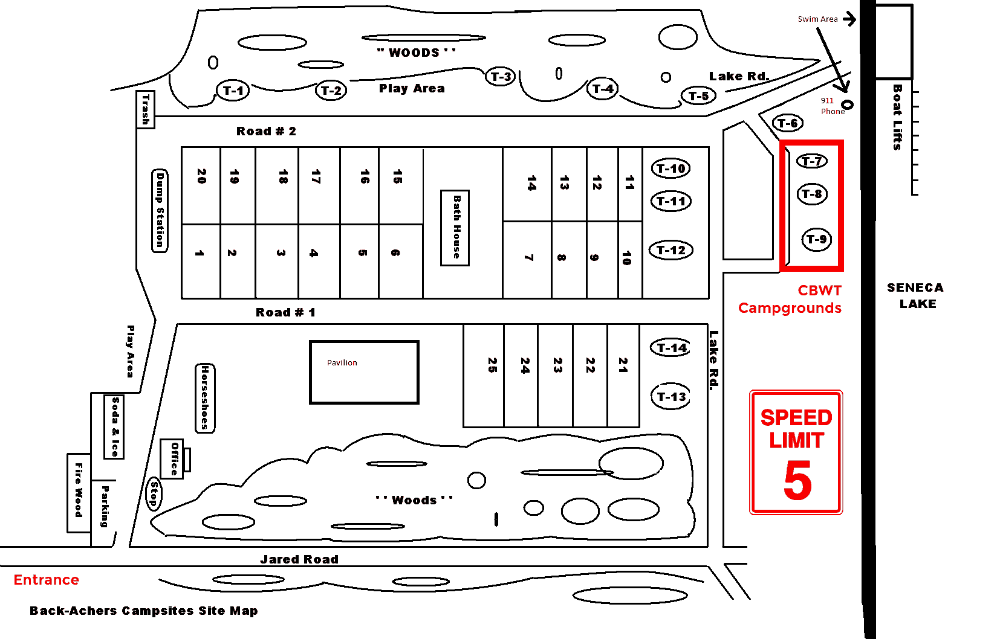

Get ready for CBWT
!
What is CBWT?
CampBikeWineTour, or CBWT, is an annual trip to Himrod, New York where a group of
friends (and strangers!) embark on a weekend of camping, biking and wine tasting
around the beautiful Seneca Lake
When is it?
Every year during the first weekend in August. The trip is centered around the Garlic
Festival at Fox Run Vineyards, so the dates always change. The trip usually runs from
a Thursday to Monday but the important day is Saturday, the wine tasting and biking
day
Where is it?
We travel to the beautiful Seneca Lake in upstate New York. Seneca Lake is part of the
Finger Lakes, a series of lakes parallel to each other that form the shape of a hand.
The bike tour starts at
Fox Run Vineyards and
ends at Miles Wine Cellars
Tour Activities
The Camp Sites
We usually rent out a few sites depending on the amount of attendees, but each
individual camp site comes with a picnic table and a tire rim for burning wood. The
grounds themselves provide wood and ice for a small fee as well as showers and
restrooms that are cleaned daily. There is ample tree canopies for shade and the sites
sit only a moment from the lake
Seneca Lake
The lake rests at the bottom of the camp sites and gives unfettered access to the 37
mile long lake. Because the lake is so large we dont suggest straying too far from the
shore as you may not recognize the camp from far away. There are kayaks to rent for an
additional fee, and there are some boat rentals facilities further away that have
full-day and half-day rental service
Biking
While the biking day is saturday, please feel free to ride your bike whenever you
please, although the camp is at the bottom of a steep hill (The bikes are brought to
the furthest point via vehicle on bike day). The roads are mostly straight with a
variety of inclines and declines. The roads are not heavily trafficed but do be safe
and aware of your surroundings
Wine Tasting (and one brewery)
The road on which the camp sites sit have numerous amounts of wineries spaced out
along the way. Some are a few miles apart and others just a short ride. During the
biking tour we stop at most wineries and partake in wine tasting as a group though
sometimes the group is staggered. The price varies but the average is about $4 per
tasting which usually comes with about 5-6 wines to taste. Feel free to buy bottles of
wine along the way. Some people bring backpacks hold additional bottles along the ride
The Garlic Festival
The Garlic Festival is the final large activity of the weekend, it is also how the
trip is annually scheduled. For us, it begins Sunday afternoon where traditionally
those that are leaving for the weekend finally dispatch after having one final
celebratory group outing. The festival has free entrance and takes place at the
initial winery that we visit on Saturday, Fox Run Vineyards. It houses dozens of
vendors, food tents and live music. Of course, if you still want some wine, the winery
itself is open that day as well
Disclaimer / Warnings
Physical Risks
The tour takes place at the start of the typically hottest month of the year, so
prepare for heat and sweat. The biking tour can be greuling on the body, especially
when using a bicycle that is not well fitted for your body, so keep in mind any
physical limitations. Heat and physical stress mixed with alcohol consumption can be
dangerous, SO PACE YOURSELF. CBWT is not a competition - there is no winner's medal
Drug / Alcohol / Condition Interactions
You could ingest an amount of alcohol that can interact with your medications and / or
physical conditions. If you are unsure about the impact of the factors speak with your
doctor for any further recommendations
Frequently Asked Questions
What are the camp sites like?
You can find more information about the
Back-Achers Campsite at
their website. Below you can see an outlined map of the camp area:

How far are the nearest towns?
The closest town to the camp is Penn Yan which is roughly 10 miles North/North-West.
Watkins Glen is about 20 miles South
What other attractions are in the area?
At Watkins Glen is the
Watkins Glen International
where different events are held through the weekend
How far is the bike ride?
The biking tour is roughly 12 miles in length, with periodic stops at wineries about
every 1.5 miles. Below is an outlinned trail of all the stops:
How long does the biking take?
About 6 hours. The wineries close at 5PM so the tour tries to reach the final winery
by 4:30PM
Can I exclude myself from activities?
You certainly can, but be sure to bring something to entertain yourself for the times
where you may be alone
Can I bring my pet?
It is not recommended that you bring your pet with you for extended hours/overnight
camping
Can I rent a bike?
Yes, though it is suggested you bring your own bicycle, you can find different rental
locations
here